第一章 Linux 概述¶
1.1 认识Linux¶
操作系统¶
现在在我们的日常生活中，各种各样的软件为我们提供了丰富的功能。比如发送邮件、浏览网页、编辑视频或音频、编辑文档文件和管理日程安排等等。
这些软件都需要运行在计算机硬件（CPU、内存、硬盘、显卡、键盘和鼠标等）上。计算机结构非常复杂，而且计算机硬件分为很多种类，其功能也各不相同。
操作系统（以下简称“OS”）主要作用就是有效的利用各种硬件的功能与性能，使开发者或计算机操作者更容易开发应用程序或使用软件。但OS只提供运行硬件的基础功能，软件开发者可以在操作系统之上开发出各种功能丰富且易于使用的软件，让普通用户能够轻松的使用计算机来工作。
优秀的操作系统提高了开发人员的开发效率，同样也使得用户能够花费更少的精力学习使用所需的功能。
目前常见的OS代表有Linux、Microsoft Windows、macOS等。
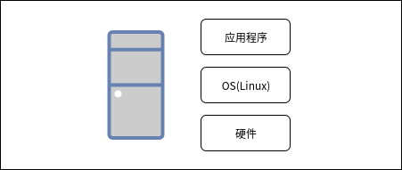OS的作用
OS由内核提供最基础的操作系统功能，再加以一些具有各种功能的程序组成。内核可以管理所有硬件方面的资源调用，其包括利用CPU、管理内存、管理外部设备、管理机箱和中断硬件等。内核提供了各种各样的接口和库为开发者使用，所以开发者可以通过程序操作内核，而普通用户可以通过程序提供的服务来调用硬件资源。
应用程序种类
用户程序是指针对特定的用途而开发的软件，具体功能取决于用户用途。系统应用程序一般都是OS中包含的程序包组，它是由程序供应商打包在一起，通过委托开发或自行开发等制作和发布。
Linux操作系统构成
Linux操作系统由Linux内核、库和用户控制平台组成。
Linux系统¶
Linux系统的内核是为OS提供最基本功能的程序，例如CPU的调用、内存管理、进程管理等等。OS的启动是从Linux内核被读取后由内核引导系统开始的。
低功耗双模块
在系统启动后，内核模块根据程序的需要从磁盘读取到内核地址空间。由于在内核中针对各种厂商不同的网络硬件对应有不同的驱动器（控制硬件的程序），所以网络硬件模块作为低功耗双模块来提供。
库
库作为开发程序时所需函数的通用素材。在Linux中，系统提供了GNU开发的库，以及X.Org开发的X库。
X Window System
X Window System程序由X.Org组织开发的X服务和X客户端构成。在X Window System上，桌面环境得以以统一的设计和操作作为基础，为开发者提供了菜单、图标和后退回台窗口等服务。
程序开发环境
在程序开发所需的解释程序中，Linux系统可以提供Bash、Python、Perl语言等，作为编译器，可以提供C、C++、Java等开发环境。
服务程序
在Linux中可以提供各种各样的后台服务。例如，有ssh交换通讯数据的程序、提供打印机服务的程序等。
命令、实用程序
在桌面环境中，有提供文字处理和计算表格等办公工具套件（LibreOffice），具有高级功能图形编辑软件（GIMP）、Web浏览器（Chrome）、邮件工具（雷鸟邮件）、系统管理工具（系统监视器）等。另外，还为一般用户提供了用户管理、网络管理、数据库管理等用途的命令。
Linux发行版¶
1991年，自李纳斯.托瓦兹在互联网上公开了第一版Linux内核以来，Linux内核就吸引了众多开发人员参与其中并不断发展。
但是仅有Linux内核还不能称为OS，除此之外还需要有由源代码通过比较生成的可执行文件，程序可使用的程序库，为用户提供接口的Shell等诸多软件才能将Linux视为完整的OS，除此之外OS中还包含了从Shell启动的命令、工具，以及将它们安装到磁盘的安装程序。
企业、组织或个人可以为Linux内核集成上述软件并制作成OS进行发布（Distribute），所发布Linux系统被称为**发行版**(Distribution或Distro)。
在Linux操作系统中主要由免费软件和开源软件组成，下面我们简单描述Linux系统常见的软件类型：
自由软件
在GNU通用公共许可证（英语：GNU General Public License，缩写GNU GPL 或 GPL）下分发的软件称为“自由软件”，使用通用公共许可证编写的软件统称为自由软件。GPL的主要条件内容包括：
如果要发布编译源代码生成的二进制文件（可执行程序），则该源代码也必须公开。
可自由开发、变更、发布和使用。
使用GPL发布的软件为基础，再次进行开发和变更的软件也必须基于GPL发布
GPL的这一独特规定保证了软件可以再次分发，达到共享和发展软件目的。大多数Linux系统中的主要软件是在GPL下分发的免费软件。
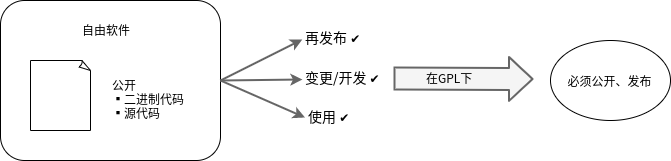开源软件
源代码要求公开，但再次分发自由的软件一般被称为“开源软件”。在开源倡议（Open Source Initiative:OSI）中，根据“开发源代码定义”（The Open Source Definition:OSD），规定了开源软件的主要条件内容如下：
允许再次分发
程序的可执行文件在发布时，必须也同时发布完整的源代码
如果对软件进行了修改，不必与修改前的代码使用同样的许可证
开源软件的规定变更了GPL中“以GPL为基础发布的软件、再次发布的变更软件必须同样使用GPL”这样的要求。
如果您修改了使用开源许可证进行分发的软件，您也可以通过其他许可证再次分发。在某些情况下，对于想要隐藏源代码的公司来说，这是一个易于采用的协议。
X.Org开发的X Window System软件为“MIT许可证”，Mozilla组织开发的Web浏览器Firefox为“MPL（Mozilla Public License）”，构成Linux系统的一部分软件也都以开放形式发布。
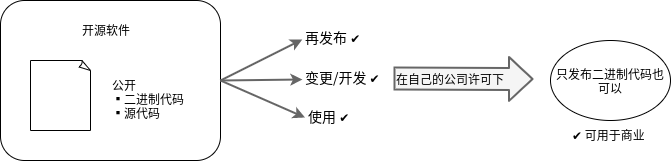再造软件
再造软件在分发的情况下是不允许修改或复制的软件。发布者只提供二进制文件（可执行程序），不公开源代码。一般情况下，获取再造软件是收费的。Microsoft Windows和在其系统上运行的收费软件都是再造软件。
在一部分Linux发行版中，有时会包含再造软件。如果擅自将原程序软件复制散布，恐怕会涉及到著作权，所以需要注意。
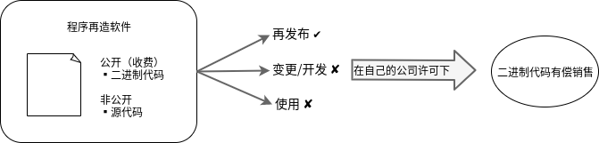
Linux中的软件多是通过自由软件和开源软件的许可证发布的，可以自由地进行再次发布和变更。因此，现在有RedHat Enterprise Linux(RHEL)、CentOS（RHEL下游发行版）、Ubuntu、Debian/GNU Linux等数百种发行版。
用户可以考虑自己的喜好和使用目的，从中选择合适的版本。这也是Linux最大的特征之一。
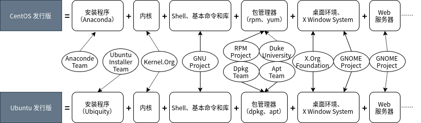内核、库、Shell和基本命令都是OS所必备的组件，在任何发行版中都是通用的（不同发行版所采用的软件版本可能会有所差异）。
各种Linux发行版最大的区别在于软件包的管理方式和桌面环境。
包管理器¶
包管理器的类别有RedHat系的rpm命令管理方式，Ubuntu/Debian系的dpkg命令管理方式，以及其他的方式。不同的包管理器所管理的软件包的封装格式也各有不同。
另外，从网络上的存储库安装、更新的方式中，有RedHat系的dnf（早期版本为yum）命令管理方式，Ubuntu/Debian系的apt命令管理方式，以及除此之外的其他方式。
存储库（Repoitory或Repo）是指软件包所在的存储位置。Linux系统通常使用在网络上的存储库，但也可以将本地DVD、CD-ROM或ISO镜像作为存储库。
RedHat系 |
Ubuntu/Debian系 |
|
|---|---|---|
包格式 |
rpm格式 |
deb格式 |
包管理命令 |
rpm命令 |
dpkg命令 |
利用存储库的包管理命令 |
dnf(yum)命令 |
apt命令 |
桌面环境¶
桌面环境提供了一套统一风格的易用性设计，其中包括菜单、文件管理器、Web浏览器、邮件工具和应用托管程序，以及系统管理程序。
现在，使用最为广泛的桌面环境是GNOME，但是还有很多其他独具特色的桌面环境。
Linux发行版可以根据其用途粗略分类为服务器和台式机，面向个人和面向企业。
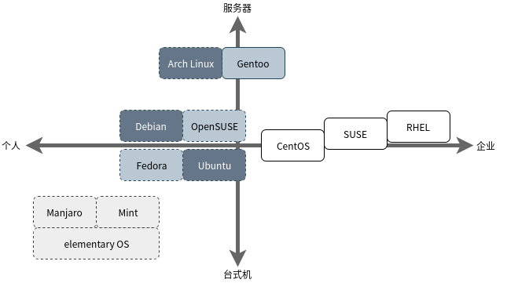发行版份额¶
在这里对各发行版的使用状况、以及Web服务器的市场占有率、开发平台的份额、云实例的份额为例进行介绍。
Web服务器
根据Q-Success公司运营的W3Techs.com调查，在运行Web服务器的Linux系统的市场占有率中，Ubuntu为第一位，Debian为第二位，CentOS（Redhat系）为第三位，接着是RedHat(Redhat Enterprise Linux:RHEL)，Gentoo等。
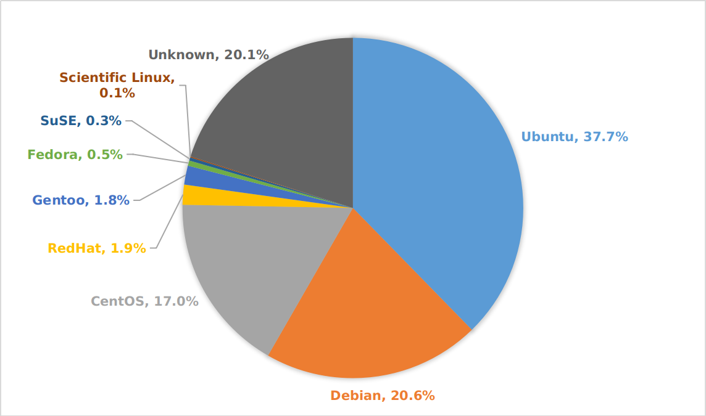注解
W3Techs.com的调查是根据亚马逊的子公司Alexa Internet公司的Web流量的统计信息为基础进行分析。
开源云平台的市场占有率
在开源云平台OpenStack中，有RedHat、SUSE、NEC、IBM、富士通、华为等100多家公司参与了开发，并且此项目支持的企业超过500家。
在OpenStack平台中运行的Linux发行版市场份额为：CentOS位居第一，Debian为第二位，Fedora Server为第三位，接着是RedHat Enterpricse Linux(RHEL)，SUSE Linux Enterprise Server(SLES)等。
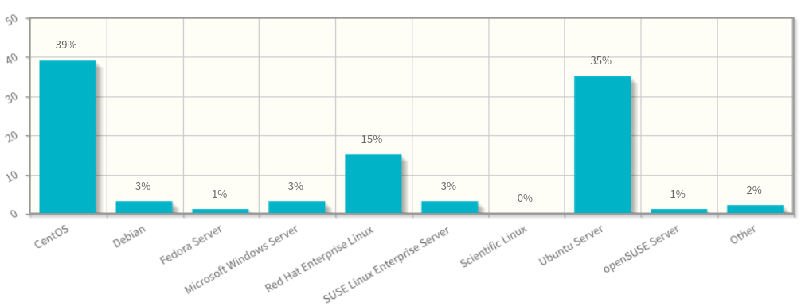公有云实例份额
根据The Cloud Market(https://thecloudmarket.com)的统计数据，除在Amazon Elastic Compute Cloud(EC2)实例中运行的Amazon Linux AMI镜像（云上运行的虚拟OS），在EC2中的Linux操作系统类别中，Ubuntu位于第一位，Debian为第二位，Microsoft Windows是第三位。接下来是RedHat（RHEL)和CentOS(RedHat系)等。
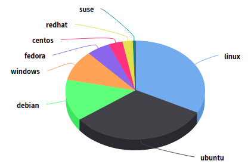
发行版人气度¶
在记载了Linux发行版等开源操作系统信息的网站DistroWatch（https://distrowatch.com）中，可以看到为Linux发行版进行人气度排序的网页，面向个人配置的Linux Mint、elementary OS、Manjaro Linux等长久的排在了前几位。
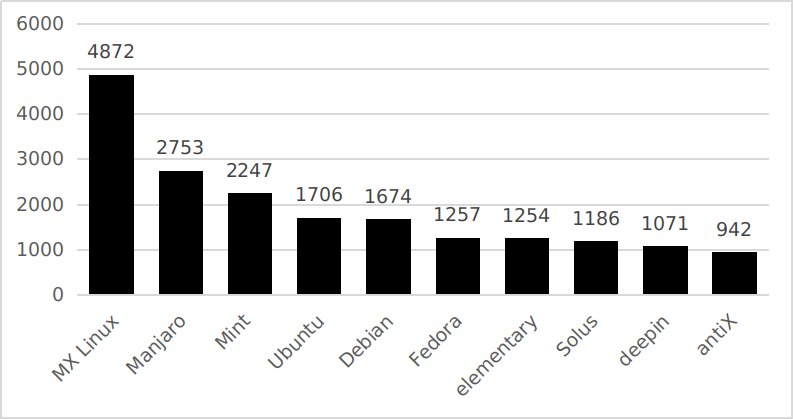注解
DistroWatch.com通过对使用同一IP地址访问Linux发行版网站每天的点击量进行排名统计。
发行版种类¶
我们可以将主要发行版分为企业用户、一般用户（RedHat系）、普通用户（Ubuntu/Debian）、通用用户（专有软件包管理分发）来介绍其特性。
面向企业的发行版
面向企业的代表性发行版有 RedHat Enterprise Linux （RHEL）和 SUSE Linux Enterprise Server （SLES）。其主要特征如下：
采用付费订阅协议（期限为1年、3年等），为企业提供了二进制文件（可执行程序）的发布、更新、支持、技术信息等服务。对于RHEL，如果没有预定合同，则无法获取二进制文件。SLES注册（免费）可获得试用版本。
由于程序包数量限定了支持范围，所以其软件的调试配置比面向一般用户的发行版的较少。
管理类的技术文档完善。
采用企业所需的高容量、高读写和高性能的文件系统。
对与高可用性集群、存储、统一认证和私有云等产品有需求的企业都可以在面向企业的发行版上获取服务
发行版
最新版本
最新版本发布日期
包管理器
标准文件系统
标准桌面环境
特征
RedHat Enterprise Linux
8
2019年5月
dnf
xfs
GNOME3
开发商：RedHat公司 1. 可以使用其他桌面环境，如KED、Xfce 2. 通过dnf命令使用存储库中的更新 3. dnf为新一代的rpm软件包管理器。dnf包管理器克服了dnf包管理器的一些瓶颈，提升了包括用户体验，内存占用，依赖分析，运行速度等多方面的内容。
SUSE Linux Enterprise Server
15
2018年7月
yum
Btrfs
GNOME3
开发商：EQT公司 1. 在ISO镜像中，除了服务器版本之外，还有SUSE Linux Enterprise Desktop 2. SUSE可以使用专有的GUI管理工具YaST 3. 通过SUSE独立的zypper命令（而非yum命令）更新存储库
面向一般用户（RedHat系）发行版
在面向一般用户的发行版中，一般将使用yum作为包管理器的发行版大致的归为RedHat系。
发行版
最新版本
最新版本发布日期
标准文件系统
标准桌面环境
特征
CentOS
8.0
2019年9月
xfs
GNOME3
开发商：CentOS项目 1. RedHat Enterprise Linux(RHEL)的复刻版本 2. 在RedHat公司的支持下，以RHEL为基础，除去了RedHat公司的Logo，开发CentOS项目
Scientific Linux
7.7
2019年8月
xfs
GNOME3
开发商：CERN、Fermilab 1. RedHat Enterprise Linux(RHEL)的复刻版本 2. 以RHEL的源代码为基础，除去了RedHat公司的Logo，CERN和Fermilab共同开发。
Fedora
31
2019年10月
ext4
GNOME3
开发商：Fedora项目 1. RHEL的开发版 2. 桌面环境还可以使用KDE、Xfce、MATE、Cinnamon、LXQt、LXDE和SOAS。
openSUSE
leap 15.1
2019年5月
Btrfs
安装时进行选择
开发商：openSUSE项目 1. openSUSE项目从2015年开始发行两种配置、Leap和Tumbleweed 2. Tumbleweed作为SLES的开发版本滚动更新，Leap是一个SLES作为基础发行。
面向一般用户（Ubuntu/Debian）发行版
在面向一般用户的发行版中，一般将使用dpkg作为包管理器的发行版大致归为Ubuntu/Debian系。
发行版
最新版本
最新版本发布日期
标准文件系统
标准桌面环境
特征
Ubuntu
19.04
2019年10月
ext4
GNOME3
开发商：Ubuntu项目 1. Canonical公司提供的Ubuntu项目以DebianGNU/Linux为基础进行开发 2. 通常每6个月发行一个新版本，支持周期为9个月，LTS（Long Term Support）是每两年发行一次，支持周期为5年 3. 桌面环境可以使用KDE、Xfce、LXDE和MATE
DebianGNU/Linux
10
2019年7月
ext4
安装时选择
开发商：Debian项目 1. 开发者遵循Debian社群契约及Debian自由软件指导方针，定义了开发Debian的基本承诺 2. 尊重GNU项目的精神，积极采用GNU开发的软件 3. 系统名称不是“Linux”而是“GNU/Linux”，发行版名称为“DebianGNU/Linux” 4. 软件包管理器dpkg于1994年有Debian项目的成员开发并发布 5. 在安装过程中，可以选择的桌面环境有：GNOME、Xfce、KDE、Cinnamon、MATE和LXDE
面向通用用户（专用软件包管理器）发行版
除了前面所述的RedHat系、Ubuntu/Debian系之外，一般将使用独立包管理器的发行版作为普通用户分类。
发行版
最新版本
最新版本发布日期
标准文件系统
特征
Gentoo Linux
滚动发布
Protage
开发商：Gentoo Foundation 1. 不属于RedHat系也不属于Debian/Ubuntu系的独立发行版 2. 软件不是二进制代码，而是需要通过源代码进行安装 3. 软件包管理系统Portage使用脚本编译源代码和安装软件包 4. 其用途是可以面向各种用途进行定制
Arch Linux
滚动发布
pacman
开发商：Aaron Griffin，其他 1. 不属于RedHat系也不属于Debian/Ubuntu系的独立发行版 2. 简便轻量 3. 使用安装ISO镜像进行安装操作，手动进行分区、文件系统的初始化和分类、安装包、编辑和配置文件 4. 包管理器是ArchLinux独有的pacman 5. 命令行界面（Command Line Interface） 6. 也可以从存储库中安装桌面环境
Manjaro
滚动发布
pacman
开发商：Manjaro团队 1. 基于ArchLinux的一般用户对用户友好的发行
注解
滚动发布版本不是发行版的版本号，而是按每个单独的程序包版本进行管理，它可以随时更新软件包。滚动发布的Linux发型版可以从官方网站下载定期更新的发行版安装镜像。
主要桌面环境¶
个发行版本的最大不同之一是采用的桌面环境配置不同，桌面环境的外观和操作方式不同。此外，每个桌面环境都有自己的模拟终端，您可以在其中运行Linux命令来执行操作系统的操作和管理。
以下是主要发行版中采用的桌面环境的示例（括号内是桌面环境）。
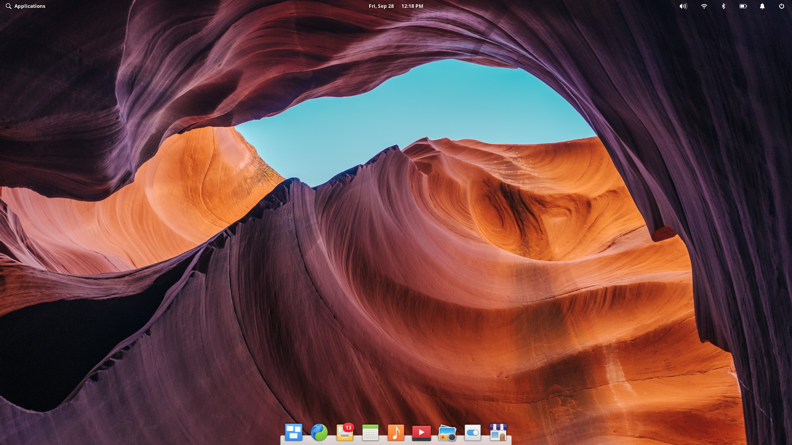 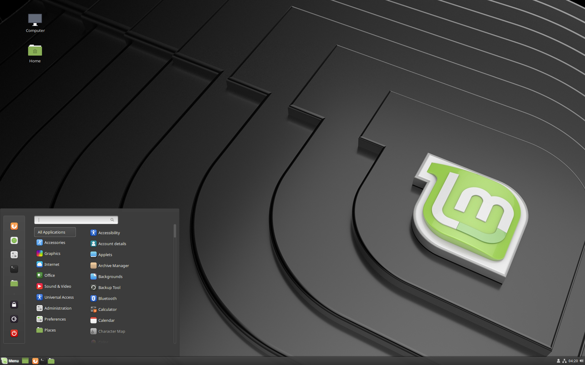 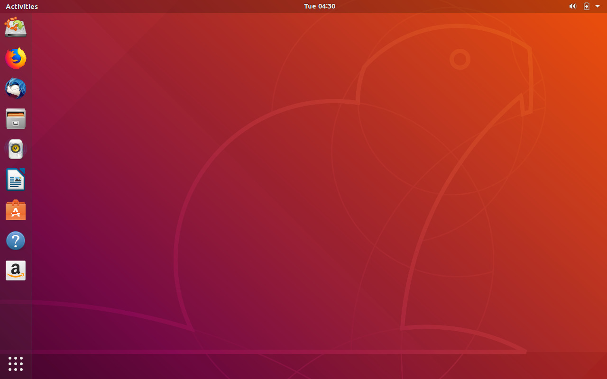 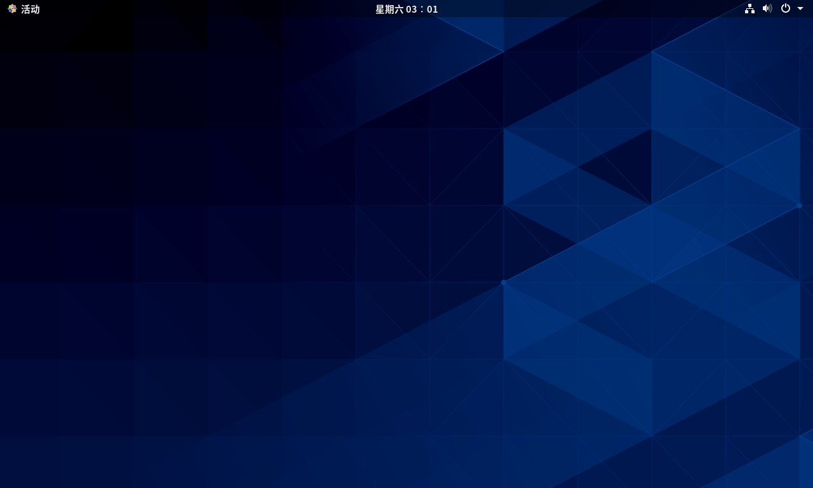桌面环境 |
模拟终端 |
可使用的Linux发行版 |
特征 |
|---|---|---|---|
GNOME |
gnome-terminal |
大多数发行版，如CentOS和Ubuntu |
开发商：GNOME项目 1. GNOME最新版本为GNOME3 2. 在GNOME3中，将GNOME2中提供的GNOME Panel替换为GNOME-shell作为用户的图形界面，在操作性和设计上发生了很大的变化 3. GNOME-Shell被设计成适用于鼠标和键盘操作的大型的桌面PC，和使用键盘、鼠标、触控板外接屏幕操作的小型移动PC 4. GNOME3可以在登录时选择GNOME会话 |
KDE |
Konsole |
openSUSE、Ubuntu、CentOS等 |
开发商：KDE项目 1. 正式名称为K Desktop Environment 2. 使用QT工具包开发的桌面环境 3. 和GNOME一样，KDE可以在很多发行版中使用 |
Xfce |
xfce4-terminal |
Ubuntu、CentOS等 |
开发商：Xfce项目 1. 专为需要快速、轻便的桌面环境的用户而设计 |
LXDE |
lxterminal |
Ubuntu、Debian、Fedora等 |
开发商：LXDE团队 1. Lightweight X11 Desktop Environment 2. 为配置较低的PC设计的轻型桌面环境 3. 适用于配置较低老旧PC和轻薄笔记本，使用GTK工具包开发的桌面环境 |
LXQt |
qterminal |
openSUSE、Fedora等 |
开发商：LXQt团队 1. 与LXDE有相似的设计目标，使用QT工具包开发的桌面环境 |
Cinnamon |
gnome-terminal |
Mint、CentOS、Ubuntu等 |
开发商：Linux Mint团队 1. 从GNOME3的GNOME-Shell衍生出的桌面环境 2. 虽然是专为Linux Mint开发的桌面环境，但是现在可以在多个Linux发行版中使用 3. 外观与操作性与GNOME2相似 |
MATE |
mate-terminal |
CentOS、Ubuntu等 |
开发商：MATE团队 1. MATE是继承GNOME2的桌面环境 2. 虽然GNOME项目停止了对GNOME2的开发，但MATE继续支持GNOME2开发 3. 名字来源与南美的马特茶 |
Pantheon |
pantheon-terminal |
elementary OS |
开发商：elementary公司 1. elementary OS的桌面环境 2. 具有设计美观和操作简洁的特征 3. 基于GNOME软件组件构建而成 |
GUI和CUI操作¶
操作系统的操作方法分为两种：GUI操作与CUI操作。
GUI(Graphical User Interface)
使用鼠标在图形界面桌面上操作菜单或图标。
CUI(Character User Interface)
仅在显示器上显示文件，并通过键盘的输入进行操作。
在桌面环境中提供了不同的GUI工具，您可以通过鼠标来操作这些工具。作为CUI，每个桌面环境都提供了自己的模拟终端。您可以在这个模拟终端中使用键盘输入并执行Linux命令。大多数情况下，GUI工具无法完成细微的操作也可以使用命令来完成。
不同的桌面环境有不同的GUI工具，但是指令在几乎所有的发行版中都是相同的（有时也会因为命令所采用的版本不同有细微的差异）。
下面是使用桌面环境GNOME工具中（GUI）进行的操作的示例，以及在模拟终端中gnome-terminal中（GCI）执行等效操作的示例。
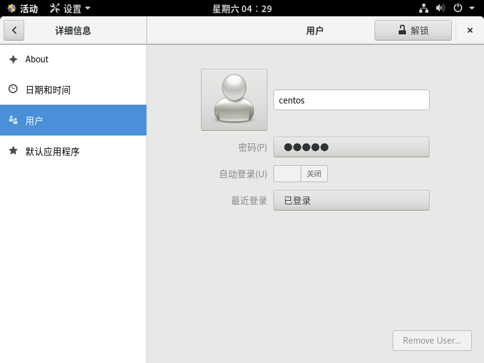 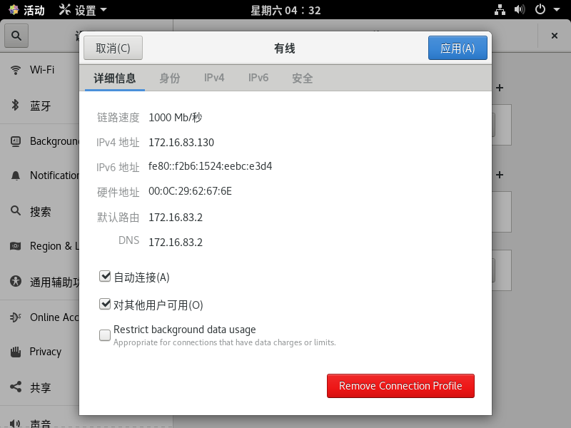 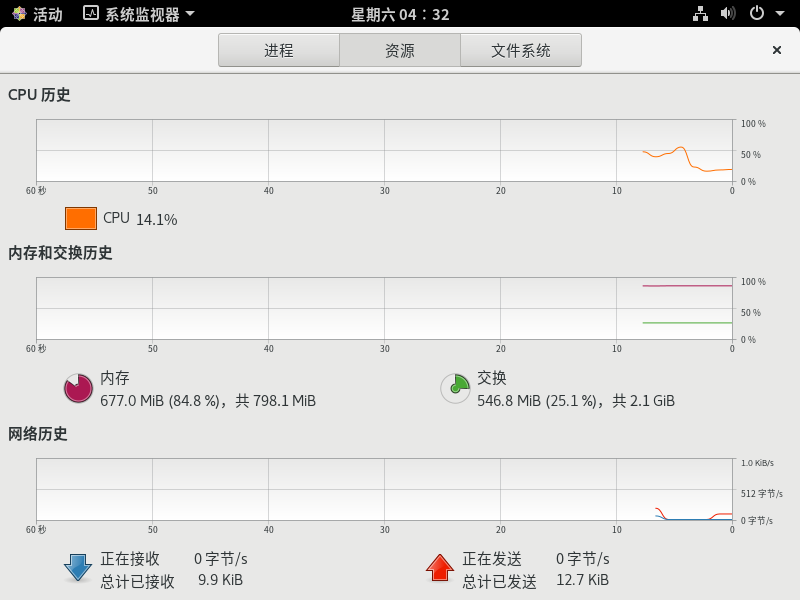 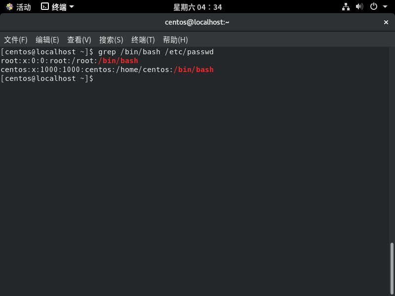 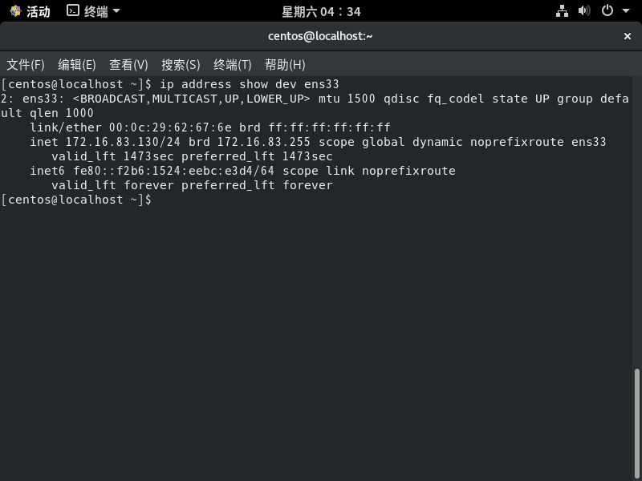 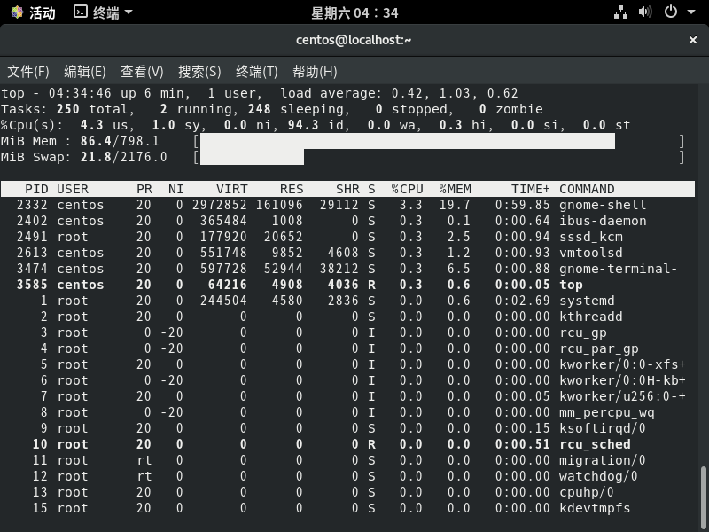对于服务器（如DNS、Web或邮件），通常不需要安装桌面环境，或者安装了桌面环境也不使用。原因是当您通过网络管理设备时，您的桌面环境必定会增加网络传输的流量，而且也会消耗一定的性能。所以使用GCI来管理操作系统可以省去繁琐的操作流程与节省流量。
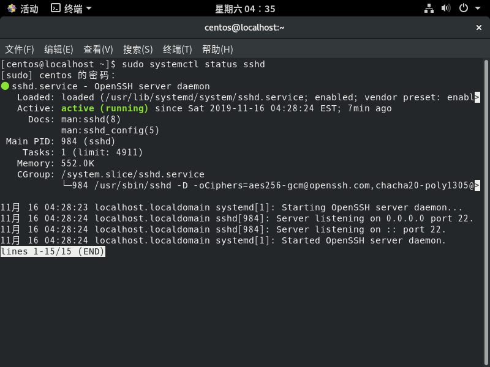 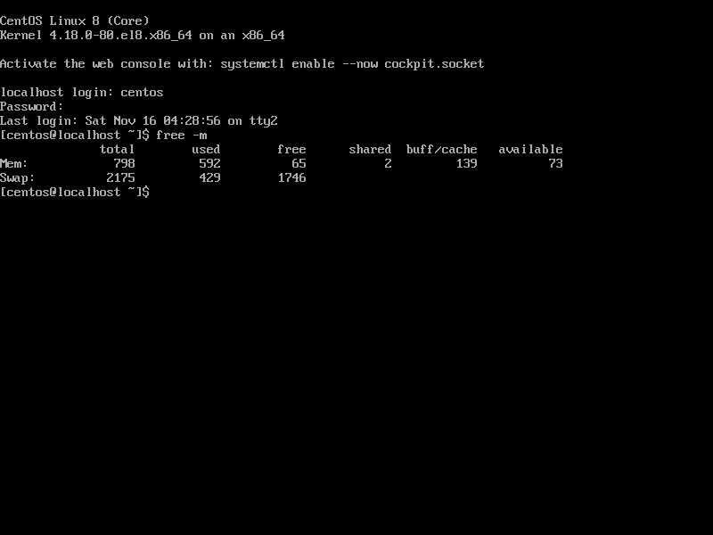